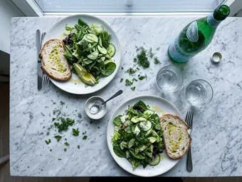
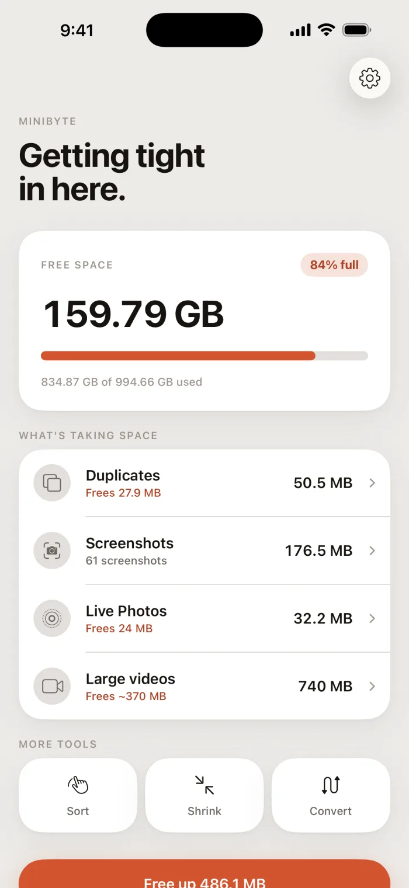
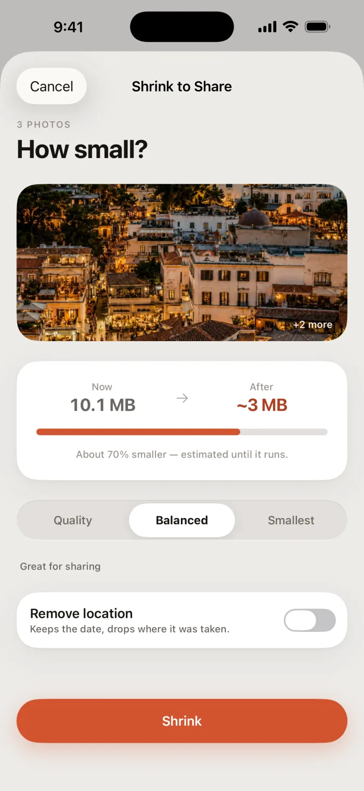
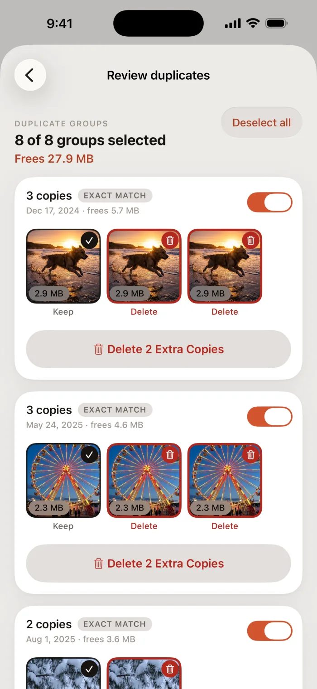
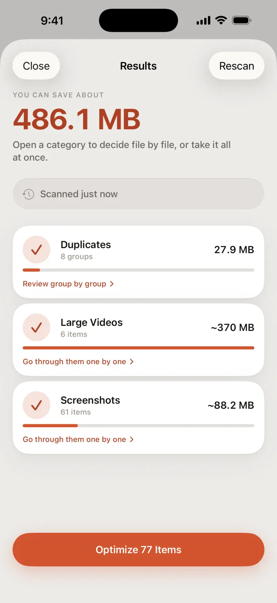
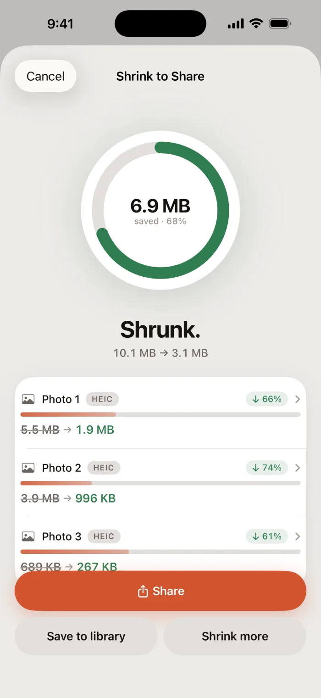
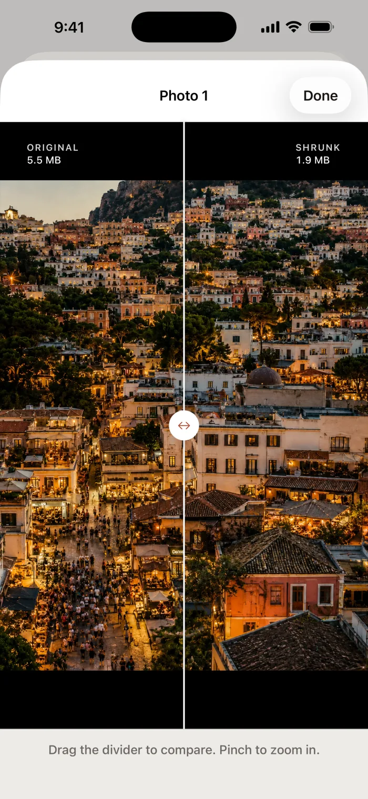
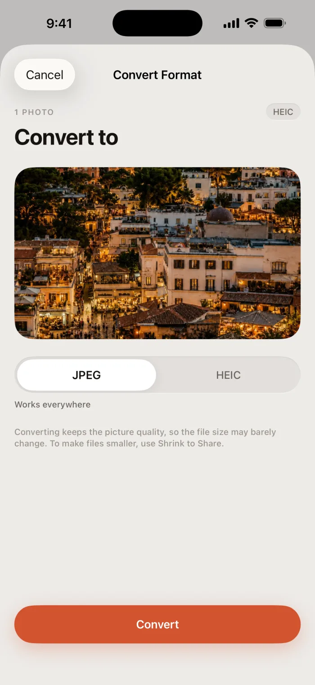
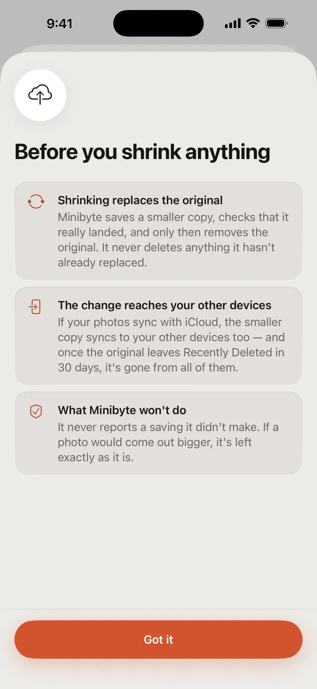

iPhone · Photos & video
From gigabyte to Minibyte.
Minibyte breaks your photo library into duplicates, screenshots, Live Photos and oversized video — a real number on each — then gets the space back. It never deletes an original it hasn't replaced.
- No subscription
- No upload
- No account


Pay once. That's the whole price.
- All seven toolsIncluded
- SubscriptionNone
- In-app purchasesNone
- 4,812 duplicates
- 61 screenshots
- a 47 MB video
- a burst of 9
- a HEIC it won't open
- 2019, still here
Minibyte tells you what a job will cost before it runs, and never deletes an original it hasn't replaced
Duplicates
Nine goes at one photo.
Exact copies, and the near-copies from the same few seconds. Minibyte ranks the frames on sharpness and on whether the faces came out, then recommends one — and you can overrule it on any frame.
Metadata
Your photos keep their dates.
Most compressors hand back a file stamped with today. Minibyte carries the original metadata across, so a photo you shrank in August is still a photo from June.
Prefer to drop the location? One switch, and the capture date stays.

Shrink to share
And when one file has to get smaller.
Measured on real files. Your own will differ.
What it does
Seven tools, one photo library.
Each one does a single job, and tells you the cost before it runs.
Free up space
Scan for what's actually big in your library, then take it category by category or file by file. Nothing is deleted before its replacement is saved.
Find duplicates
Exact copies, and near-copies from the same few minutes. Compared on your iPhone, never uploaded to be compared elsewhere.
Screenshots
Receipts, maps and confirmations, grouped by the month you took them, cleared in one pass.
Live Photos
Keep the picture, drop the three seconds of video attached to it. Month by month, with the recoverable size on each.
Sort by hand
Swipe through the photos no scan can judge. Sorting is never counted against a limit.
Shrink to share
Too big to email? Pick photos or videos, choose how small, send. Or shrink straight from the Photos share sheet without opening the app.
Convert format
HEIC to JPEG when the other app refuses to open it, and back again. MOV to MP4 for video.
Inside the app
Six screens, nothing staged.





Safety
It never deletes what it hasn't replaced.
- An original goes only after the smaller copy is confirmed saved. A failure or a skip leaves it alone.
- Every deletion goes through iOS's own prompt, and stays in Recently Deleted for 30 days.
- When a re-encode comes out larger — it happens with small files — the original stays and the app says so. It won't report a saving it didn't make.

Nothing leaves your iPhone.
Minibyte makes no network requests at all — no networking code, no third-party SDKs, no advertising. Compression runs through Apple's own frameworks on your device.
Pricing
One payment. That's the whole app.
Buy it once, keep it
- Every tool, with no limits and nothing held back
- The share extension, so a shrink starts from Photos or Files
- Near-duplicate cleanup and the sorting deck
- Updates included, on the same purchase
- No subscription, no account, no ads, no analytics
The price is shown in the App Store, in your own currency.